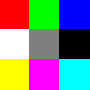
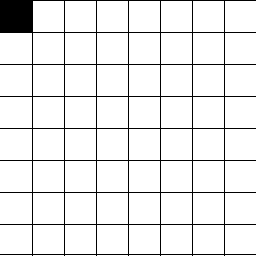

PNG
by Jiří Znamenáček
Úvod
Grafický formát PNG (Portable Network Graphics) vznikl jako reakce na licenční politiku kolem formátu GIF (odtud též PNG is Not GIF :) a přestože ho zcela nenahrazoval, byl záhy standardizován a obecně poměrně kladně přijat. V mnoha ohledech konkuruje i jiným formátům, především tím, že je poměrně snadno implementovatelný a jeho struktura zahrnuje volitelné rozšiřování podle potřeb příslušných aplikací. Na druhou stranu jde o čistě RGB-formát, takže nenahrazuje formáty schopné pracovat v jiných barvových prostorech (jako je např. CMYK).
PNG podporuje obrázky ve stupních šedi (grayscale; 8- i 16-bitové), plné barevné hloubce (truecolor; běžně 24-, ale i 48-bitové) plus obrázky s barevnou paletou (colormap, index color). Navíc je to vše možno kombinovat s průhledností v podobě až 16-bitového alfa kanálu, zobrazovat prokládaně a přikládat k obrázkům barvové ICC-profily.
Struktura PNG
Globální struktura PNG-souboru je následující:
-
hlavička – vždy stejných 8 bajtů
89 50 4E 47 0D 0A 1A 0A, jinak to není PNG -
série tzv. chunků různých typů, které mají všechny stejnou strukturu:
- délka dat chunku [4 bajty]
- typ chunku [4 bajty]
- data chunku
- kontrolní součet (CRC) chunku [4 bajty]
PS: Struktura hlavičky kromě i lidsky viditelné identifikace (2.-4. bajt představují PNG) slouží k odchycení možných problémů při přenosu – první bajt testuje zachování nejvyššího bitu, další pak překlady řádků nebo EOF.
Nejjednodušší sekvence chunků, která poskytne validní PNG-obrázek, je takováto:
-
IHDR– hlavička; obsahuje všechny informace potřebné k rozkódování obrázku -
IDAT– vlastní data obrázku -
IEND– ukončovací chunk (neobsahuje žádná data)
IDAT může být více. Měly by být všechny za sebou.
PS: Druhý nejjednodušší typ obrázku bude ještě mezi IHDR a IDAT obsahovat barevnou paletu PLTE.
Chunk IHDR
Chunk IHDR, je vlastně úplně nejdůležitější – zjistíme z něj totiž obecné informace o obrázku včetně všech potřebných pro jeho dekódování. Struktura jeho datové části je následující:
- šířka obrázku v pixelech [4 bajty]
- výška obrázku v pixelech [4 bajty]
- bitová hloubka [1 bajt]
- barvový typ [1 bajt]
- metoda komprese [1 bajt]
- metoda filtrace [1 bajt]
- metoda prokládání [1 bajt]
Díky tomu, že datová část obsahuje vždy právě 13 bajtů, je začátek chunku IHDR vždy stejný – po délce dat b'\x00\x00\x00\r' (tedy 13 hexadecimálně) následuje typ chunku b'IHDR'. Dále následuje 13 bajtů údajů a nakonec 4 bajty kontrolního součtu (z hlavičky a dat).
Chunk IHDR – poznámky
Chunk IHDR tedy plně určuje strukturu obrázku. My se ze všech možností omezíme pouze na tu nejpodobnější formátu PPM a tedy i nejjednodušší na zpracování (a případné konktrolní zobrazení):
- obrázky s osmibitovou barevnou hloubkou (tj. hodnota
8) a truecolour (barvový typ2) bez alfa-kanálu, které zaznamenávají pro každý pixel tři barvové hodnoty RGB v rozmezí 0-255; - komprese a filtrace jsou podle aktuálního standardu vždy typu
0; - prokládání nás nebude zajímat (dost se to s ním – nepřekvapivě – komplikuje), proto námi zpracovávané obrázky zde musí mít
0.
Několik upřesňujících poznámek:
-
„Metoda komprese“ je v aktuálním standardu jedna jediná, a to
0(deflate/inflate compression with a sliding window of at most 32768 bytes). -
„Metoda filtrace“ je v aktuálním standardu jedna jediná, a to
0(adaptive filtering with five basic filter types). Číslo zde uvedené nemá s čísly označujícími filtry u jednotlivých scanlines tedy prakticky nic společného, každá scanline může mít filtr 0 až 4 (a všechny patří do aktuální rodiny0). -
„Metody prokládání“ jsou v aktuálním standardu právě dvě –
0(žádné prokládání) a1(prokládání Adam7 interlace).
Chunk IEND
Protějškem chunku IHDR je chunk IEND, který označuje konec PNG-obrázku. Slouží tedy jako signál pro ukončení čtení a zpracovávání dat.
Díky jeho funkci je jeho struktura extrémně jednoduchá:
-
4 bajty délka dat chunku –
b'\x00\x00\x00\x00'(je nulová) -
4 bajty typ chunku –
b'IEND' -
data chunku –
b''(žádná nejsou) -
4 bajty konktrolní součet chunku –
b'\xaeB`\x82'(tedy0×ae 0×42 0×60 0×82)
zlib.crc32(b'IEND').
Chunk(y) IDAT
Vlastní data obrázku jsou uložena v jednom nebo více chuncích IDAT. Přitom platí:
-
data z více
IDAT-chunků se složí dohromady a uvažují jako celek - (složená) data jsou zkomprimovaná
- (rozkomprimovaná) data představují zafiltrované řádky – první hodnota je varianta filtru, následují (zafiltrované) barvy pixelů v řádce (tj. tři pro každý pixel – RGB)
- rozfiltrované řádky představují už skutečná RGB-data jednotlivých pixelů
PS: Pro rozkomprimování zakomprimovaných chunků IDAT můžete použít knihovní metodu zlib.decompress().
Filtrace I
Protože RGB-data obrázku se v rámci PNG komprimují, je vhodné je předpřipravit tak, aby se lépe komprimovala (sekvence opakujících se znaků se komprimují lépe než náhodné neopakující se znaky). Pro tyto účely byly vymyšleny tzv. filtry, které slouží k úpravě dat obrázku před jejich kompresí (a tudíž pak opačným směrem i při jejich dekompresi).
Nejjednodušší možný filtr (0) přitom data vůbec nemění, další tři (1, 2 a 3) jsou konvoluční filtry (v podstatě detekují postupně hrany vertikální, horizontální a pod úhlem 45°) a poslední z nich (4, Paethův) používá navíc prediktor (pro výběr barevně nejbližšího pixelu z okolních).
Filtrace II
Filtry operují na aktuálním bajtu a maximálně až na dalších třech (barevně) odpovídajících bajtech v okolních pixelech podle následujícího schématu:
c b (Rc,Gc,Bc) (Rb,Gb,Bb)
a x (Ra,Ga,Ba) (Rx,Gx,Bx)
Pixel x ve schématu představuje právě zpracovávaný pixel, pixel a je předcházející na stejné řádce, b je „stejný“ pixel na předchozí řádce a c předcházející pixel na předchozí řádce. Nejsou-li bajty z pixelů a, b, c na aktuální pozici k dispozici (začátek řádku, první řádka), nahrazují se nulami.
Filtry překládající zafiltrované scanlines na cílové RGB berou bajty z pixelů a, b, c již odfiltrované.
Veškeré výpočetní operace jsou provedeny bez přetečení v rámci bajtu, výsledek je však samozřejmě následně „nacpán“ zpátky do bajtu jednoho.
Tabulka rekonstrukčních filtrů
Při označení (podle specifikace)..
- Filt(y) – hodnota bajtu y po filtraci
- Recon() – zrekonstruovaná hodnota bajtu y po odfiltrování (při správném postupu by měla odpovídat originální hodnotě Orig(y))
..je tabulka rekonstrukčních filtrů (bez redukce zpět na jeden bajt) následující:
| typ | rekonstrukční funkce |
|---|---|
| 0 |
Recon(x) = Filt(x)
|
| 1 |
Recon(x) = Filt(x) + Recon(a)
|
| 2 |
Recon(x) = Filt(x) + Recon(b)
|
| 3 |
Recon(x) = Filt(x) + (Recon(a) + Recon(b)) // 2
|
| 4 |
Recon(x) = Filt(x) + PaethPredictor(Recon(a), Recon(b), Recon(c))
|
Definice filtru Paeth (a, b, c jsou jednotlivé bajty odpovídající barvy z příslušných pixelů):
def paeth(a, b, c):
p = a + b - c
pa = abs(p - a)
pb = abs(p - b)
pc = abs(p - c)
if pa <= pb and pa <= pc:
return a
elif pb <= pc:
return b
else:
return c
Příklad – PNG bez palety, 8 bpp
Podívejme se na zub obrázku sachovnice.png, který je v osmibitové barevné hloubce a neobsahuje barvovou paletu:
{kind=link}

Příklad – PNG s paletou, 4 bpp
Podívejme se na zub podobnému obrázku sachovnice.PLTE.png, tentokrát však s paletou a ve čtyřbitové barevné hloubce:
{kind=link}
Poznámky
Ze způsobu pojmenování typu chunku (tedy podle toho, které bity jsou nastavené; prakticky se to projevuje zápisem buď velkými nebo malými písmeny) se dá poznat mnohem více – zda je příslušný chunk nutný pro přečtení obrázku (např. IDAT versus tEXt), veřejný či privátní (pro nějakou konkrétní aplikaci) nebo zachovává-li se při transformaci obrázku (např. hIST).
Praktická stránka věci: Pro zpracování obrázku vás zajímají pouze chunky, jejichž typ je zapsán verzálkami (velkými písmeny).
Vícebajtová čísla (např. délka dat) jsou zakódována v pořadí big endian, tedy od nejvýznamnějšího bajtu vlevo po nejméně významný vpravo (tj. poslední bajt vpravo určuje číslo v rozmezí 0-255, předchozí v násobcích 256 atd.).
Pro rozkomprimování zakomprimovaných chunků IDAT můžete použít knihovní metodu zlib.decompress(), která implementuje algoritmus DEFLATE.
Kontrolní součet se provádí nad sekvencí typ chunku + data chunku, je ho tedy možno počítat průběžně. Použitý algoritmus není moc vhodný pro delší data (nedokáže v nich už tak snadno rozpoznat chybu), proto se v praxi datové chunky IDAT dělí obvykle po 8 kB. V zápočtovém programu můžete použít implementaci CRC zlib.crc32().
Barvová paleta je v datech příslušného chunku PLTE uložena nekomprimovaně.
Prokládání v PNG je jakýsi vtipný kompromis mezi původním GIFem (přenos různých řádků) a formátem JPEG (přenos různě významných členů transformace). Jeho nejmenší složkou jsou bloky 8x8, z nichž se přenáší hodnoty pixelů podle následujícího schématu:

1 6 4 6 2 6 4 6 7 7 7 7 7 7 7 7 5 6 5 6 5 6 5 6 7 7 7 7 7 7 7 7 3 6 4 6 3 6 4 6 7 7 7 7 7 7 7 7 5 6 5 6 5 6 5 6 7 7 7 7 7 7 7 7
Poznámky k „výrobě“ PNG
Pokud byste chtěli PNG i ukládat, nejjednodušší je používat filtr 0 – není to efektivní, ale zase s ním není co složitě počítat.
Stejně tak je jednodušší ukládat obrázky jako plnobarevné v osmibitové barevné hloubce, protože zapisujete přímo jednotlivé RBG-hodnoty pro každý pixel.
Když se budete chtít vyřádit, můžete místo RGB-hodnot ukládat pro každý pixel pouze jeho index v paletě. Ale také ho nechte osmibitový, protože menší počet bitů všechno výrazně zkomplikuje (viz příklady).